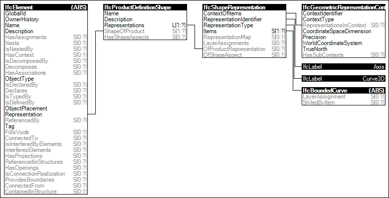

Link to this page
Link to this pageThe 'Axis' representation using 'Curve3D' representation type is predominately used to align material profile sets to geometric representations of standard beams, columns, members, pipes, ducts and other longitudinal elements.
The following attribute values for the IfcShapeRepresentation holding this geometric representation shall be used:
Figure 33 illustrates an instance diagram.
 |
Figure 33 — Axis 3D Geometry |